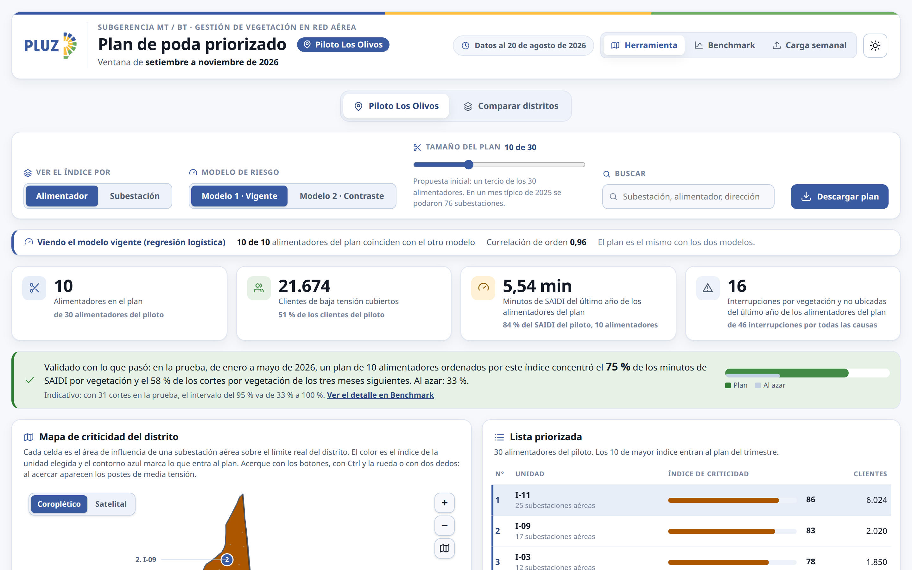

Poda priorizada por riesgo de vegetación
Pitch: herramienta para decidir dónde podar primero
César Eduardo Pajuelo Reyes
Angello Giovani Soldi Cataño
Josué Nehemías Velo Poma
Paolo Medrano Terán
Pluz Energía y UTEC · noviembre de 2026

1 de cada 5 cortes en la red aérea viene de la vegetación
Interrupciones de Pluz, enero de 2024 a agosto de 2026

Hoy se poda por calendario o después del corte
La brecha que atendemos
Cómo se decide hoy
- Esquemas periódicos o reactivos.
- Inspección presencial, conexión por conexión.
- Sin un criterio que junte riesgo, tiempo sin poda, SAIDI y clientes.
Qué produce
- Podas innecesarias en unas zonas y tardías en otras.
- Cuadrillas limitadas repartidas sin orden de urgencia.
- Minutos de SAIDI y clientes afectados que se podían anticipar.
La idea: una lista que dice dónde podar primero
Idea, solución y cómo funciona
1. Datos de Pluz
Interrupciones, poda, guía de subestaciones y SAIDI, cada semana.
2. Riesgo a 3 meses
Un modelo estima la probabilidad de un corte por vegetación.
3. Índice de 0 a 100
Riesgo, tiempo sin poda, SAIDI y clientes expuestos.
4. Plan priorizado
Mapa, lista y plan descargable para los contratistas de poda.

Qué cambia frente a la forma actual
De la inspección conexión por conexión a un plan medido
Si la hubiéramos usado: más SAIDI evitable
Planes armados sin ver el futuro y contrastados con lo que pasó

Junio a agosto de 2026
Plan de mayo en los 8 distritos:
de SAIDI por vegetación se habrían podido evitar: una reducción potencial del 57 %, frente al 34 % podando al azar.
- Los Olivos, enero a mayo: con 10 de 30 alimentadores, el 74 % del SAIDI por vegetación de los tres meses siguientes habría sido evitable.
- Cómo se lee: es el SAIDI de los cortes que ocurrieron en alimentadores que el plan mandaba podar. Si la poda evita esos cortes, ese SAIDI no se habría producido. Es un techo, no una reducción medida.
Lo que sigue
Trabajo futuro y cierre
Marcar cada poda
preventiva o correctiva, para medir su efecto real.
Bajar al tramo
con el maestro de estructuras, para el primer corte de un alimentador.
Validar en campo
un trimestre programado con la lista, para calibrar los pesos.
Operar en Pluz
en sus instalaciones, con la carga semanal ya automatizada.